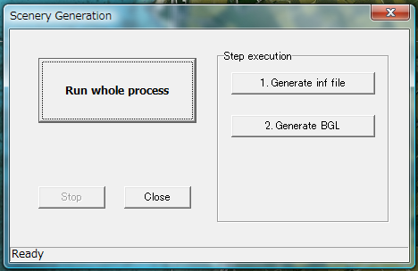

Generate scenery
Select "Scenery Generation" menu.

Scenery generation process consists of following steps:
- Create inf file for resample.exe.
- Execute resample.exe of Terrain SDK. Bitmap files and tmf files are created in this process.
- Merge alpha texture. In this process, textures and alpha textures are merged into
targa (.tga) format bitmaps.
- Convert texture. In this process, targa format bitmaps are converted into
BMP files used in Flight Simulator.
- Generate BGL file. Tmf files are compressed and BGL file is generated from the tmf file.
Usually use "Run Whole Process".
That's all!!! All scenery files are generated.